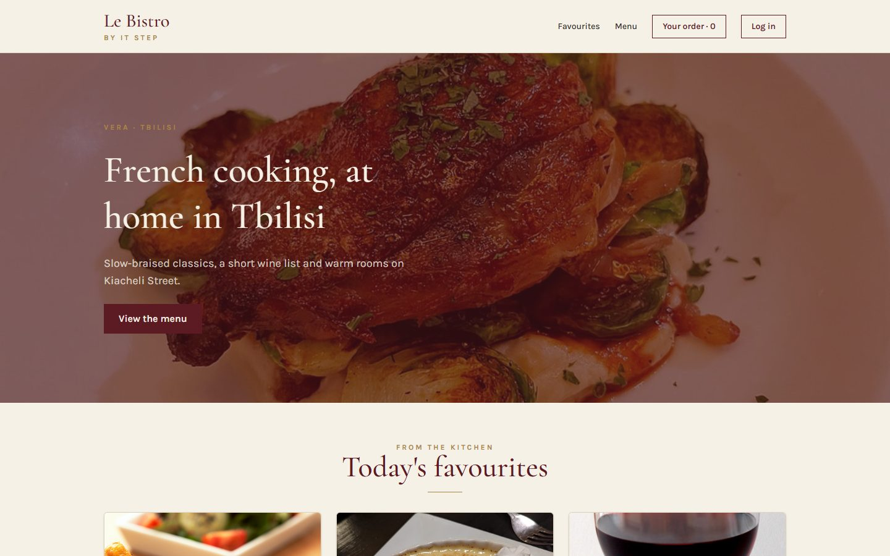
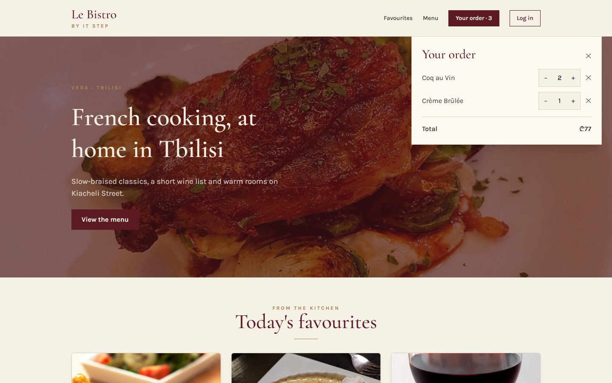
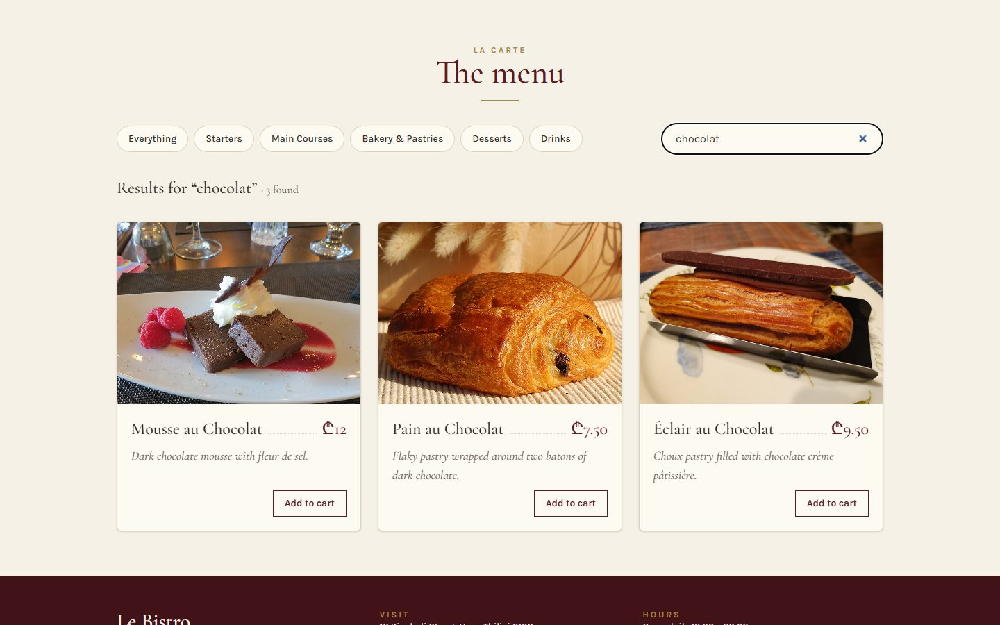
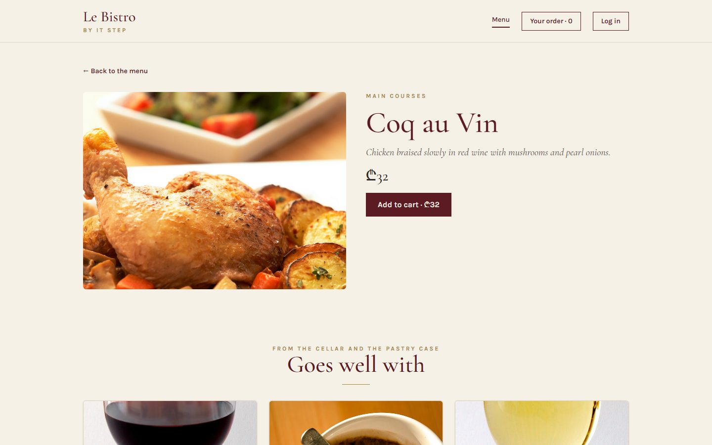
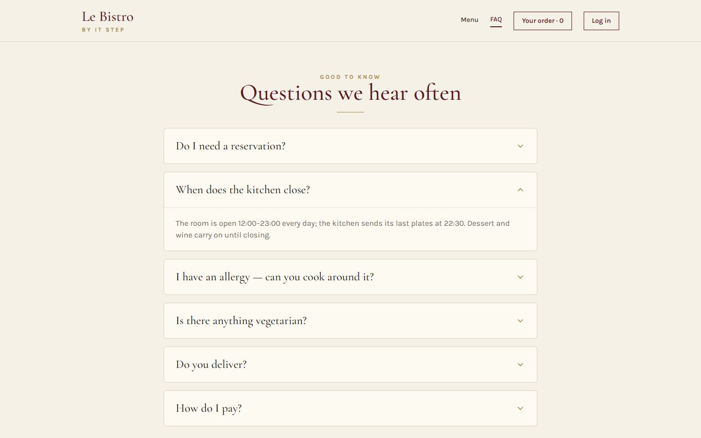
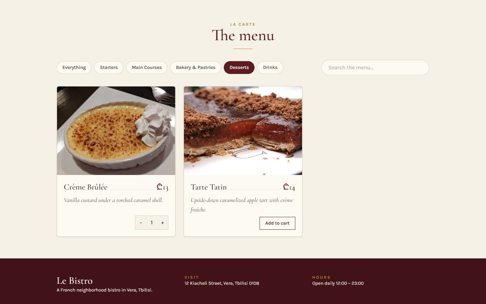
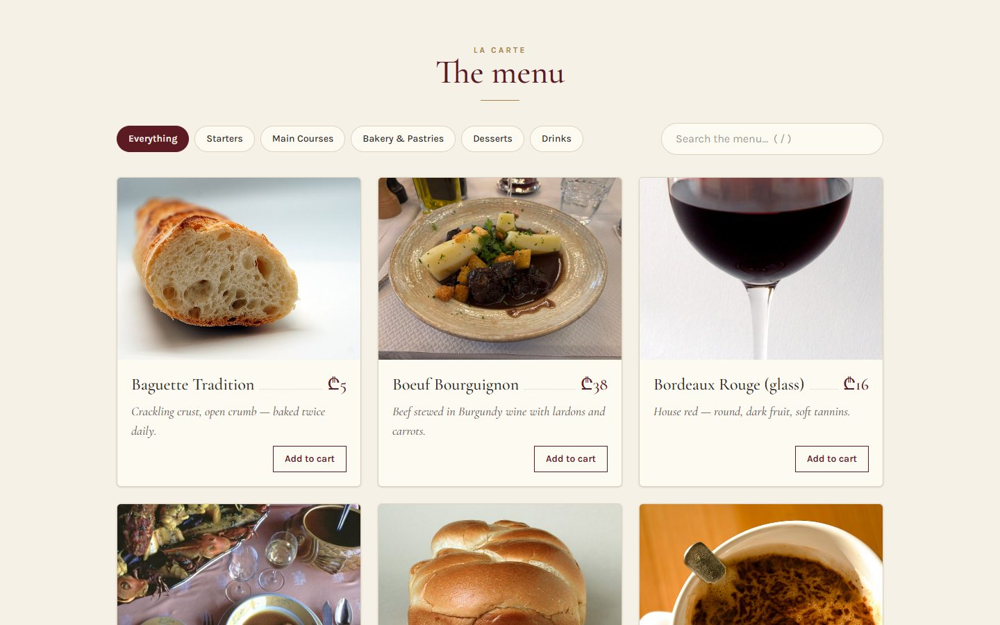

Effects and real data. Le Bistro's motto is "market first": the menu bends to what the morning market has. Today our menu comes from the real kitchen server.
Theme
useEffect, useRef, custom hooks
Le Bistro today
The real menu from the API
Your project
v0.3 · DummyJSON, saved cart
Length
2 hours · one break
le marché“market first”
Le Bistro · L29 · 120 minutes
Today's menu
AccueilHello where Le Bistro is today3′
ApéritifQuestions and two homework demos9′
EntréeProblem 1 the menu is a file6′
PlatuseEffect and fetch loading, errors, CORS24′
AtelierClasswork 1 products from DummyJSON15′
Pause caféBreak music on, screens off10′
Second platProblem 2 and custom hooks faster than the kitchen30′
AtelierClasswork 2 search and a saved cart15′
DessertWrap-up recap, homework, next time8′
Route Lecture 3 of 5
Le Bistro, lecture by lecture

L27 · done
Components
Home page and menu from components and a data file.

L28 · done
State
Add to cart works. Chips filter, search finds.

L29 · today
Effects
The real menu from the API. A cart that survives a refresh.

L30
Routing
Pages with their own address. Login and staff-only doors.

L31
Context
One cart and one session for the whole site.
Your projectv0.1 ✓catalog from a data filev0.2 ✓cart, filters, searchv0.3 · todayreal API, saved cartv0.4pages, login, guardsv0.5context and reducer
Today's goal Press next to unveil it
From a file to the kitchen's server
Left: 12 dishes we typed. Under the curtain: the real menu, a search that asks the server, and grey cards while the kitchen answers.
25 real dishes, live from the API
Loading, error and empty states
A search with a delay, and a cart that survives F5

After L28
After today
Apéritif Before we start
Questions from last time?
useState, lifting state, new arrays, derived values.
01
Why [...cart, item] and not cart.push(item)?
React compares old and new state with ===. A pushed array is the same array, so React sees no change.
02
Where does state live when two components need it?
In their closest common parent. Data goes down as props, events come up as functions.
03
Should the cart total be state?
No. It is derived from the cart: calculate it during render.
Homework check Two volunteers, two minutes each
Show us your v0.2
Add two products, change a quantity in the cart panel, filter by a category. Then refresh the page.
Look for
The cart lives in App
New arrays: no push on state
Count and total are calculated
The filtered list is calculated
The same product shows the same quantity everywhere
Entrée · Problem 1 Before the new tool
The menu is a file. The kitchen is a server.
The chef changes a price at 11:00. Our site still shows yesterday's, because we typed it.
Problem 1 What we have, what is real
Our file and the real menu
src/data/dishes.ts
12 dishes, typed by hand
Prices from the day we copied them
Bouillabaisse "off the menu" forever
Changes need a new deploy
vs
GET /api/v1/enterprise/dishes
Every dish the kitchen serves today
Today's prices, today's availability
Filters on the server: ?category=drinks
A search: /api/v1/enterprise/search?q=
Open it in the browser: srmsapi.stepacademy.ge/swagger
It's the same JSON shape as our Dish type. Only the source changes.
Problem 1 The first idea, and why it explodes
Fetch right inside the component?
0 requests
ConsoleNetwork
render → fetch → setDishes → render → fetch …
Every render starts a request. Every answer triggers a render. It never stops.
Problem 1 Your turn
What would we need?
Run code after the render, not during itOnly once, or when something changesClean up when we leaveThat is an effect
Plat · Solution 1 The tool
useEffect: code that runs after the render
useEffect(() => {
// talk to the outside world
return () => { /* clean up */ };
}, [dependencies]);
01 · the effect
Runs after React has put the render on the screen. Fetch, timers, listeners, localStorage live here.
02 · the cleanup
Optional. Runs before the effect runs again, and when the component leaves the page.
03 · the dependencies
When to run it again: after any render in which one of these values changed.
Solution 1 Press next, one moment at a time
The life of an effect
Appears (mount)category changesLeaves (unmount)
renderReact calls MenuSection()
commitskeleton on screen
effect runsfetch drinks…
render + commitnew category on screen
cleanup (old)cancel the drinks request
effect (new)fetch desserts…
cleanupcancel what's left
Cleanup always runs before the next effect, and once at the end.
Solution 1 When does the effect run again?
The dependency array decides
You write
It runs
Use it for
useEffect(fn, [])
once, after the first render
a keyboard listener, a page view
useEffect(fn, [category])
after the first render, and whenever category changes
fetching the dishes of a category
useEffect(fn)
after every render
almost never. With a setState inside: an endless loop
The rule: list every value from the component that the effect uses.
The linter (eslint-plugin-react-hooks) checks it for you: "React Hook useEffect has a missing dependency".
Solution 1 The first real request fails
CORS: the server only talks to friends
Browserlocalhost:5173
Le Bistro APIsrmsapi.stepacademy.ge
Vite dev serverthe same address as the page
Console
Access to fetch at 'https://srmsapi.stepacademy.ge/api/v1/…' from origin 'http://localhost:5173' has been blocked by CORS policy
Now fetch the relative path: fetch("/api/v1/enterprise/dishes"). Restart npm run dev after editing the config.
Solution 1 · Recipe Type it with me
The favourites come from the API
State for the answernull means "no answer yet". A second state for failure.Favourites.tsx
The effect fetches onceEmpty dependency array: after the first render.
Check res.okfetch does not fail on 404 or 500. We throw ourselves.
Save the data or the failuresetState inside then and catch: after the answer, never during render.
Three endings in the JSXError, loading (skeleton), data.
Solution 1 Design all of them, not only the happy one
Every request has four endings
Loading
dishes === null
Grey cards: the page keeps its shape while we wait.
Data

dishes.length > 0
The real menu.
Empty
Nothing on the menu matches “pizza”.
dishes.length === 0
Not an error: a valid answer with nothing in it.
Error
We couldn't load the menu — please try again.
failed === true
No internet, a 500, a typo in the URL.
ConsoleNetwork
GET/api/v1/enterprise/dishes(canceled)2 ms
GET/api/v1/enterprise/dishes200512 ms
1 · effect runsReact mounts the component
2 · cleanupReact pretends the component left
3 · effect runs againand mounts it back
Solution 1 Don't panic
"Why do I see two requests?"
In development, <StrictMode> runs every effect twice on purpose: effect, cleanup, effect.
It's a test, not a bug
If your effect has a correct cleanup, the user can't tell the difference. In production (npm run build) it runs once.
Solution 1 The errors you will see today
When effects go wrong
An async effect function
useEffect(async () => { … }, []);
Effect callbacks are synchronous to prevent race conditions. Put the async function inside.
useEffect(() => { fetch(…).then(…); }, []);
A missing dependency
useEffect(() => { load(category); }, []);
React Hook useEffect has a missing dependency: 'category'.
useEffect(() => { load(category); }, [category]);
An object created during render as a dependency
const filter = { category };
useEffect(…, [filter]); // new object every render
The effect runs after every render: a loop of requests.
useEffect(…, [category]); // a string compares by value
Trusting fetch with errors
fetch(url).then((res) => res.json())
A 404 or 500 still "succeeds": res.json() then fails with an unclear error.
if (!res.ok) throw new Error(`HTTP ${res.status}`);
Quick check The dependency array
This effect loads the dishes of the selected category. Which array?
The effect uses category, so it must run again when category changes. [] loads only the first category. [dishes] loops (the effect changes dishes). No array runs after every render: a loop too.
Atelier · Classwork 1 15 minutes, on your own project
Real products
Baseeveryone
Fetch your category
fetch("https://dummyjson.com/products/category/your-category") in a useEffect with [].
The answer is { products: Product[] }: save data.products.
A loading text while products === null, an error message in catch.
Plusmost of you
A skeleton
Grey placeholder cards instead of the loading text (animate-pulse).
Profast finishers
Categories from the API
Your chips come from https://dummyjson.com/products/categories, filtered to your theme.
Our menu was a file. Fetching during render looped forever.
useEffect
Talk to the outside world after the render. Dependencies say when to run again. Design loading, error and empty.
Problem 2
Slow answers won the race, every keystroke was a request, F5 emptied the cart.
Cleanup and custom hooks
Cleanups cancel old work. useApi, useDebounce, useLocalStorage package it for reuse. useRef holds what React doesn't watch.
Dessert Click a card to check yourself
What does this do?
01
01
Runs fn once, after the first render.
02
02
A cleanup: cancels the old request before the next effect.
03
03
Turns a 404 or 500 into an error we can show.
04
04
The query, but only after 400 ms without typing.
05
05
A box that survives renders and doesn't cause them. Often holds a DOM element.
06
06
A custom hook: reusable logic. Each caller gets its own state.
Homework Before L30
Your shop, version 0.3
Live link required
Baserequired
Real data
Products come from DummyJSON. The data file is gone.
Loading (skeleton), error and empty states.
The cart is saved with useLocalStorage.
Category chips load products with ?category or the category endpoint, with a cleanup.
Plusrecommended
Search
A debounced search with /products/search?q=.
"/" focuses the search box (useRef).
Before you submit
No missing-dependency warnings
Every listener and timer has a cleanup
One request per search, not per letter
Live on Vercel
Full brief and grading: homework.md.
L29 Le marché
Merci!
Questions now, or in the class chat. See you at L30.
Next time · L30
“Send me the link to Coq au Vin.”
You can't: everything lives on one page, and the address never changes. Next lecture Le Bistro gets pages, addresses, a login and doors only staff can open.